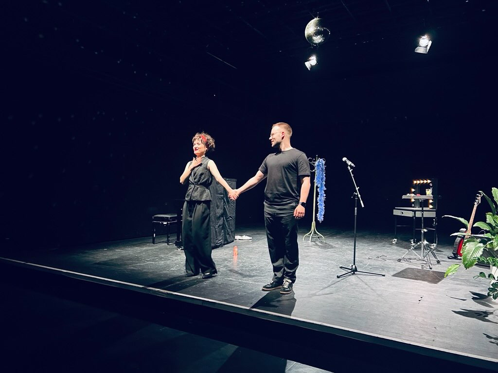

About
I am a Data Scientist, Creative Technologist, and Musician based in Vienna.
Currently pursuing a Master's in Data Science at the University of Vienna, with a focus on machine learning, AI ethics, and data visualization. My work explores critical questions about emerging technologies while developing projects that connect data, art, and society.
Education
MSc Data Science
Focus(Adversarial) Machine Learning, Explainability for AI, Data Visualization
ThesisA Lightweight Membership Inference Attack on Approximate Graph Unlearning
BSc Business Informatics
FocusData Science, Misinformation, Decision Sciences
ThesisSocial Bots and their Influence on Political Opinion
BA Social & Economic Communication
FocusStrategic Communication, Communication Design, Urban Planning
ThesisExploring different Narratives of the End
Expertise
Technical Skills
Work Experience
Associate Data Scientist & Editorial Associate
Looping Group / Looping One
Berlin, Germany
- Data analysis, visualization, and research for client reports
- Workshops on LLM data privacy, SEO, and data literacy for stakeholders
- Research and writing about emerging technologies
- Crisis communication for BMW at IAA 2021 & 2023
- API implementation and network analysis algorithms
- Campaign work for BMW, Telekom Electronic Beats, and others
Tutor — Human Computer Interaction
University of Vienna
Vienna, Austria
- Teaching students the fundamentals of React Native development
- Grading assignments and providing structured feedback
- Answering student questions via the course forum
German Teaching Assistant
University of Richmond
Richmond, Virginia, USA
- Teaching mid-level German course
- Developing lesson plans and educational materials
Assistant Director & Stage Manager
University of Music & Performing Arts Vienna
Vienna, Austria
- "Das Schweigen" by Natalie Sarraute (Dir. Dávid Paška)
- Coordinated rehearsals and supported artistic direction
Intern
Goethe-Institut Berlin
Berlin, Germany
- Information lectures for course participants
- Event program organization
Selected Projects

Piano & Chanson
Duo with Lenya Gramß

Arbitrary Relevance
LEER Studio Berlin, 2022

StyleGAN2 Music Performance
EMIK 2022

Improvisation
EMIK 2022 w/ Merlin Rainer

The Silence
Nathalie Sarraute | Dir. Dávid Paška

Rebranding Alexanderplatz
University of Arts Berlin
Writing
What Bowman’s Eight Observations Reveal About the Fundamental Challenges of LLM Explainability: Three Hypotheses
Academic Report — University of Vienna
Read PDFContact
Let's collaborate
I am always interested in new opportunities involving data science, AI ethics, and creative technology.
- Email ben (dot) seegatz (at) live (dot) de
- Location Vienna, Austria
- LinkedIn linkedin.com/in/ben-seegatz
Curriculum Vitae
Ben Seegatz
Full resume with detailed project history, references, and language proficiencies.
Download PDF